仮面ライダー
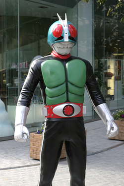石ノ森 章太郎
いしのもり しょうたろう

1938年 - 1998年
漫画家
サイボーグ009、スーパー戦隊（パワーレンジャー）、仮面ライダーなどを作りました。

仮面ライダーは1971年に始まりました。
本郷 猛（ほんごう たけし）は虫みたいなスーパーヒーローの仮面ライダーに変身して、ショッカーというテロ組織と戦います。

仮面ライダー（1971年）
「仮面ライダー」っていったいなんですか？
正義
仮面ライダーは正義の味方です。

バイク
仮面ライダーはバイクを乗ります。
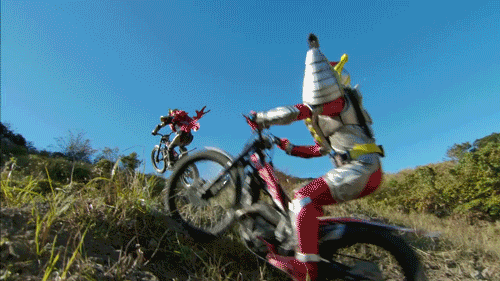キック
仮面ライダーはライダーキックで敵を倒します。
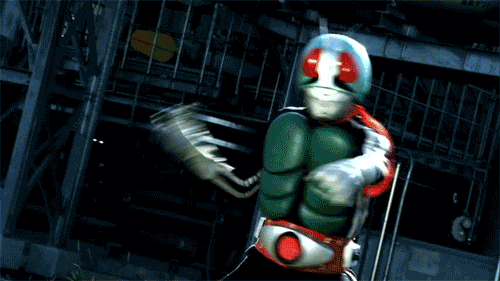昭和時代
1971年 - 1994年
仮面ライダー
1971年 - 1973年
テーマ： サイボーグ、テロ
V3
1973年 - 1974年
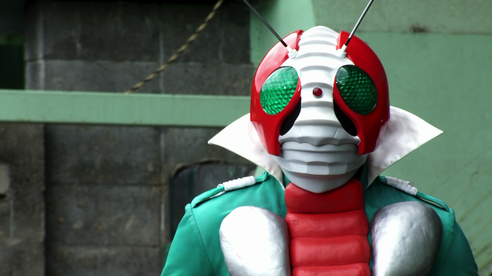テーマ： サイボーグ、テロ
X
1974年
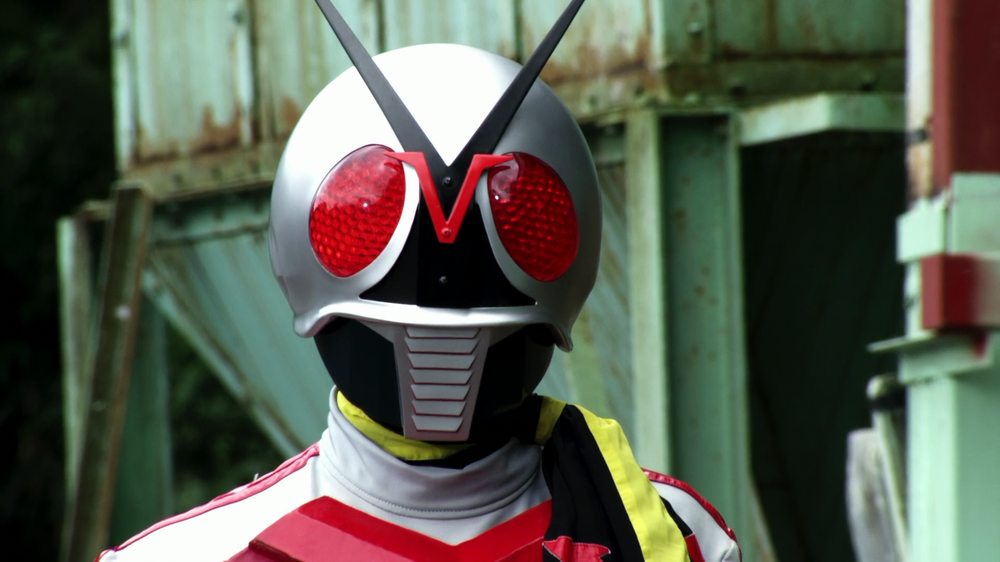テーマ： サイボーグ、テロ
アマゾン（Amazon）
1974年 - 1975年
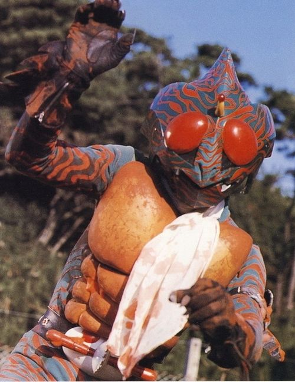テーマ： アマゾン川、インカ
ストロンガー（Stronger）
1975年
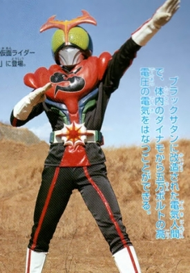テーマ： 虫、電気
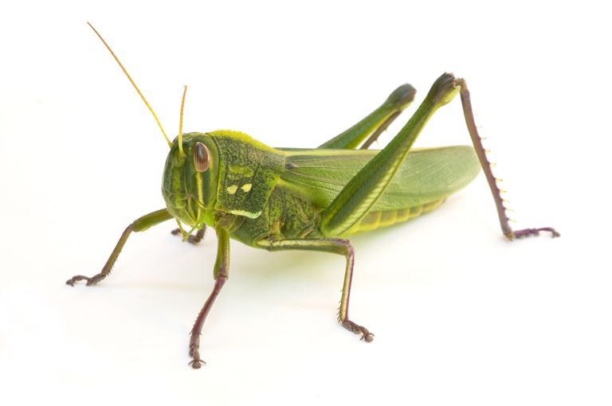
スカイライダー（Skyrider）
1979年 - 1980年
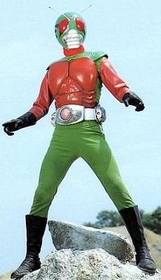テーマ： 虫、スカイダイビング
スーパー１（Super-1）
1980年 - 1981年
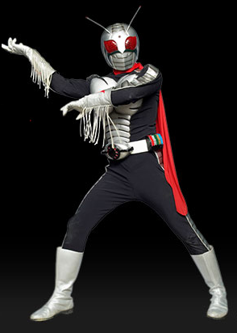テーマ： サイボーグ、テロ
BLACK
1987年 - 1988年
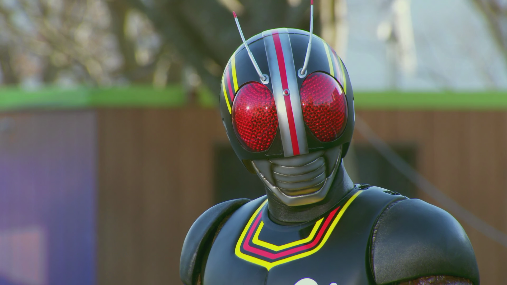テーマ： サイボーグ、テロ
BLACK RX
1988年 - 1989年
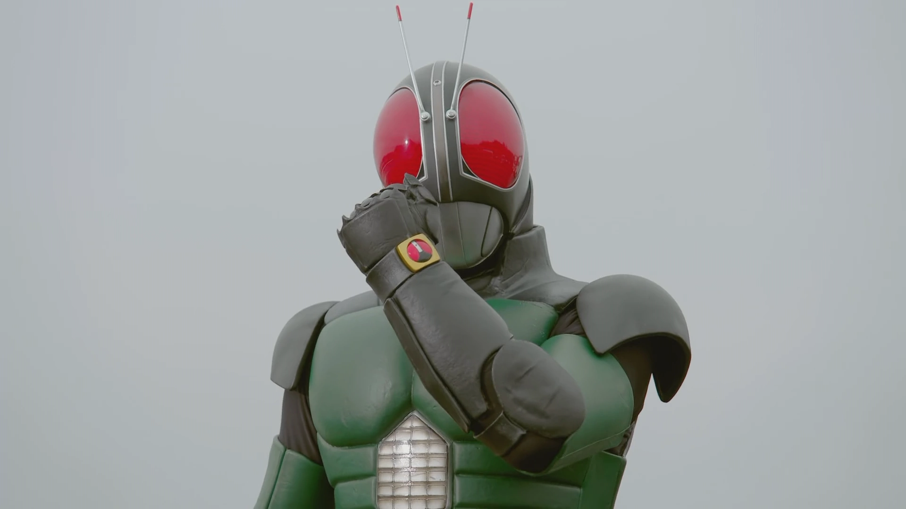テーマ： サイボーグ、テロ
平成時代（第一期）
2000年 - 2009年
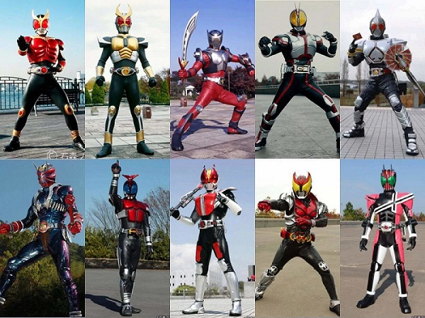クウガ（Kuuga）
2000年 - 2001年
テーマ： 部族、警察
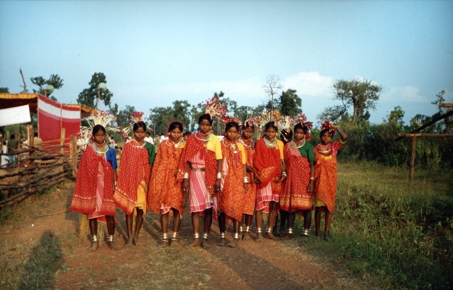
アギト（Agito）
2001年 - 2002年
テーマ： クウガ、属性
龍騎（Ryuuki）
2002年 - 2003年
テーマ： 鏡、バトル・ロワイアル
555（Faiz）
2003年 - 2004年
テーマ： ギリシャ文字、携帯電話
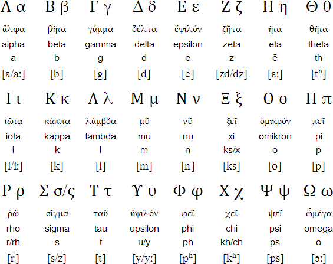剣（Blade）
2004年 - 2005年
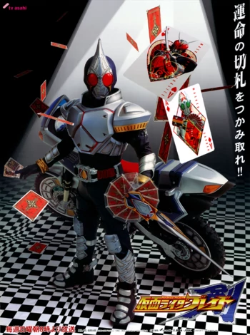テーマ： ゾンビ、トランプ
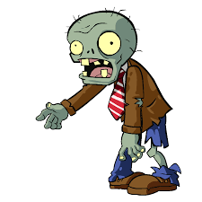響鬼（Hibiki）
2005年 - 2006年
テーマ： 和楽、鬼
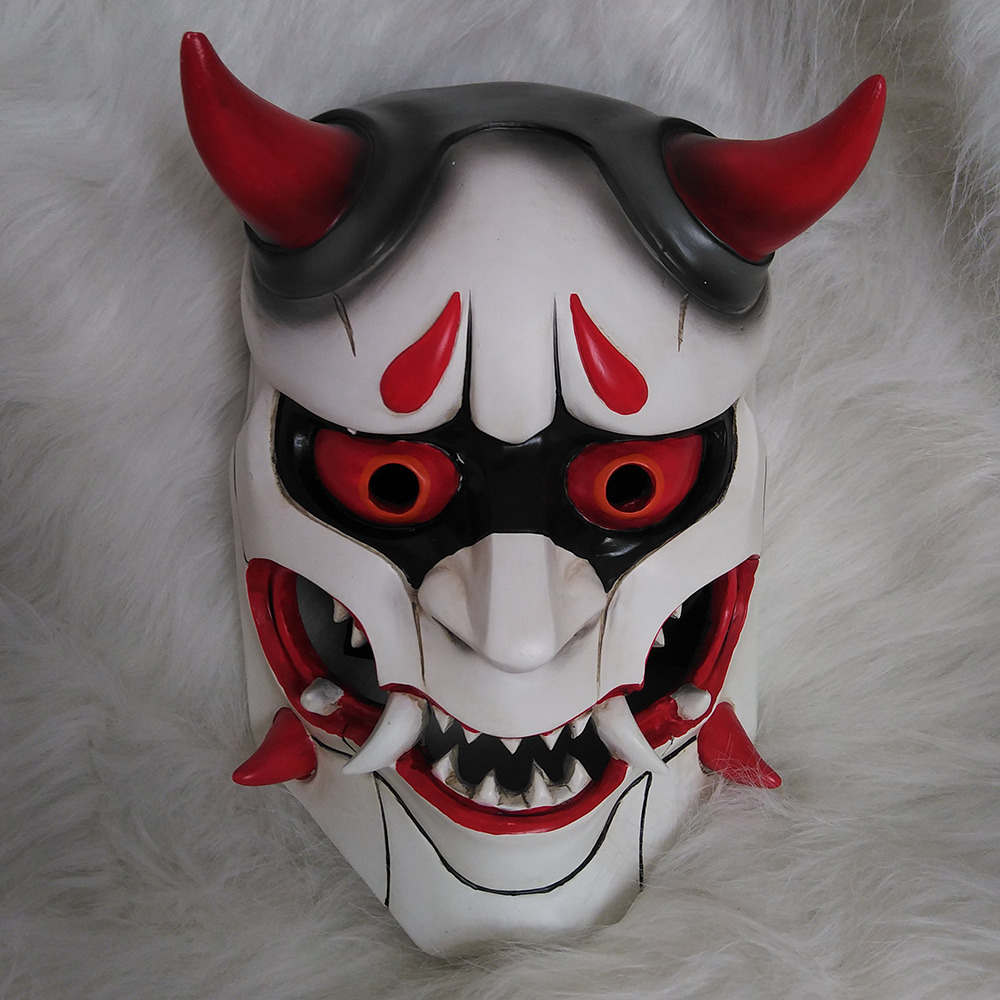カブト（Kabuto）
2006年 - 2007年
テーマ： 宇宙人、虫
電王（Den-O）
2007年 - 2008年
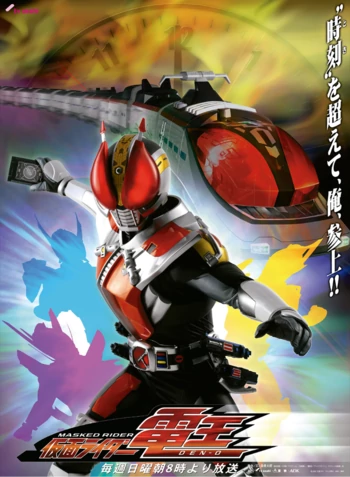テーマ： 時間、電車


キバ（Kiva）
2008年 - 2009年
テーマ： 吸血鬼、ヴァイオリン
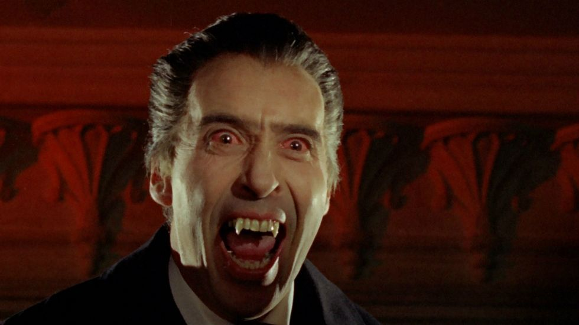 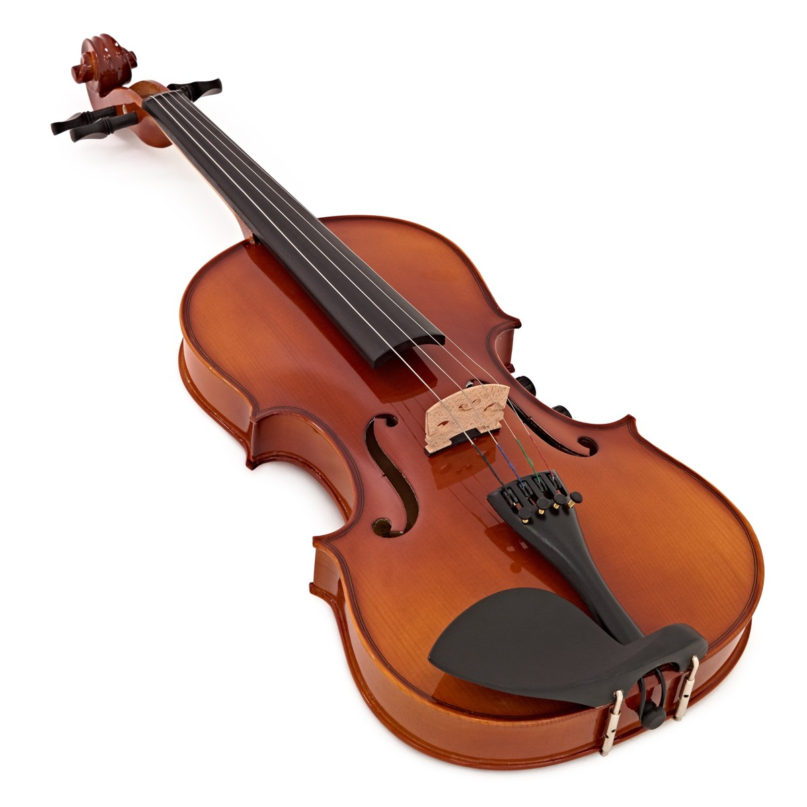ディケイド（Decade）
2009年
テーマ： 次元、平成ライダー
平成時代（第二期）
2009年 - 2019年
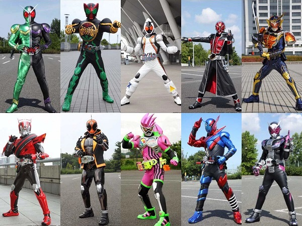ダブル（W）
2009年 - 2010年
テーマ： 探偵、二人

オーズ（OOO）
2010年 - 2011年
テーマ： 動物、欲望
フォーゼ（Fourze）
2011年 - 2012年
テーマ： 宇宙、友情

ウィザード（Wizard）
2012年 - 2013年

テーマ： 魔法、希望

鎧武（Gaim）
2013年 - 2014年
テーマ： 戦国時代、果物
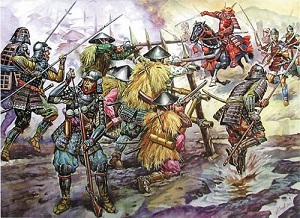
ドライブ（Drive）
2014年 - 2015年
テーマ： 警察、速さ

ゴースト（Ghost）
2015年 - 2016年
テーマ： 幽霊、歴史上の人物
 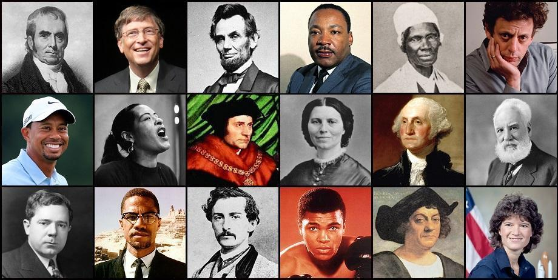
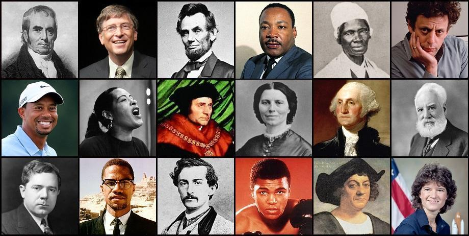
エグゼイド（Ex-Aid）
2016年 - 2017年

テーマ： 医学、ゲーム

ビルド（Build）
2017年 - 2018年
テーマ： 科学、火星


ジオウ（Zi-O）
2018年 - 2019年

テーマ： 時間、平成ライダー
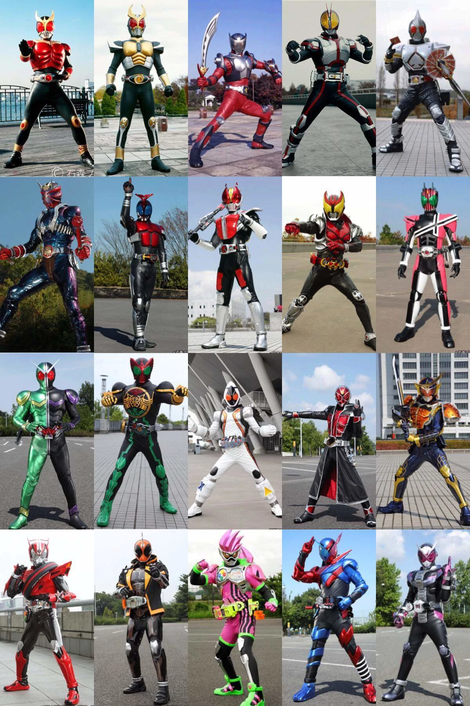
ありがとうございました
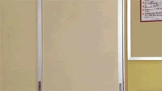 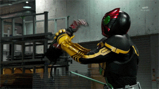
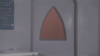